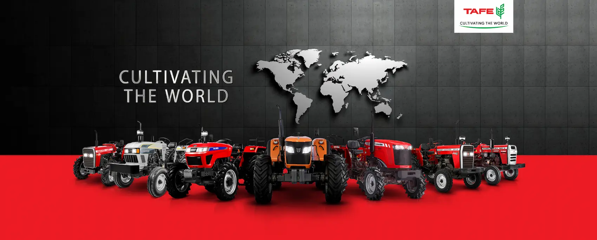

About
Tractors And Farms Limited
TAFE - Tractors and Farm Equipment Limited, is an Indian tractor major incorporated in 1960 at Chennai, India, with an annual turnover in excess of INR 12,500 crores. One of the largest tractor manufacturers in the world and the second largest in India by volumes, TAFE sells over 200,000 tractors annually. TAFE's partnership with AGCO Corporation and the Massey Ferguson brand for over 63 years is a stellar example of its commitment to building long-term relationships with its stakeholders, through fair and ethical business practices. TAFE is also a significant shareholder in the AGCO Corporation, USA - a US $11.1 billion tractor and agricultural equipment manufacturer.
TAFE has earned the trust of customers through its range of products that are widely acclaimed for quality and low cost of operation. A strong distribution network of over 1600+ dealers effectively backs TAFE’s four iconic tractor brands - Massey Ferguson, TAFE, Eicher Tractors and IMT. TAFE acquired the Serbian tractor and agricultural equipment brand IMT - Industrija Mašina i Traktora in 2018. TAFE exports tractors, both in partnership with AGCO and independently, powering farms in over 100 countries which include developed countries in Europe and the Americas.
Besides tractors, TAFE and its subsidiaries have diverse business interests in areas such as farm-machinery, diesel engines and gensets, agro-industrial engines, engineering plastics, gears and transmission components, hydraulic pumps and cylinders, vehicle franchises and plantations.
Massey Fegrussion
Massey Ferguson - a world-renowned premium brand offering a wide variety of tractors and farm machinery is an icon in itself and has been reshaping the agricultural landscape of the world since over a century now. Recognized for its experience, innovation and superior build quality, this eminent global tractor brand offers one of the most comprehensive and versatile range of agricultural and utility tractors in the industry.
Our range of premium and technologically advanced Massey Ferguson brand of tractors serve every farmer and every new mechanization need. Crafted with the finesse of TAFE, the Massey Ferguson tractors are built to last.